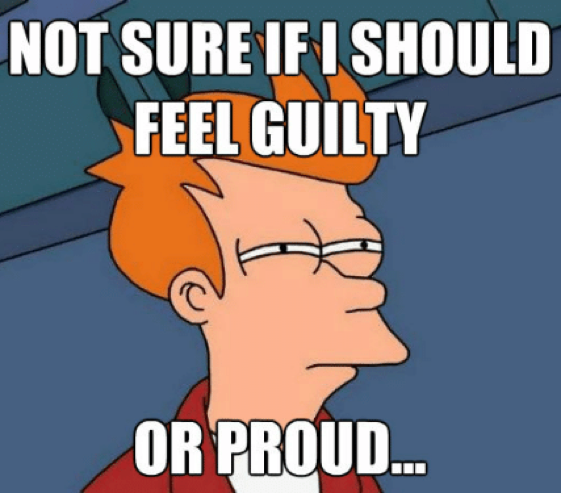

Getting people to act on good ideas
Why don't people around you act on good ideas
and how to convince them that they should?


if (complain() === true) {
complain().stop();
beAwesome();
}
Stereotypes of skeptics

The experienced

The argumentative

The unexperienced

The disciple

The lazy

The irrational

You may be wrong!

Techniques

Ignore the irrational

Focus on like minded
Common goals
Understand managers (and make them understand you)

Relief!

Show not tell

Create something awesome!

Don't listen to your mother!
Create publicity!
Invite experts

Visit people

Be visible
The end?
- Things take time
- Success doesn't happen in a silo
- You may be wrong (but don't worry to much)
- ”Better” is not a place. It’s a direction.
Thank you!
Slides:
http://steinim.github.io/slides/getting-people-to-act-on-good-ideas/